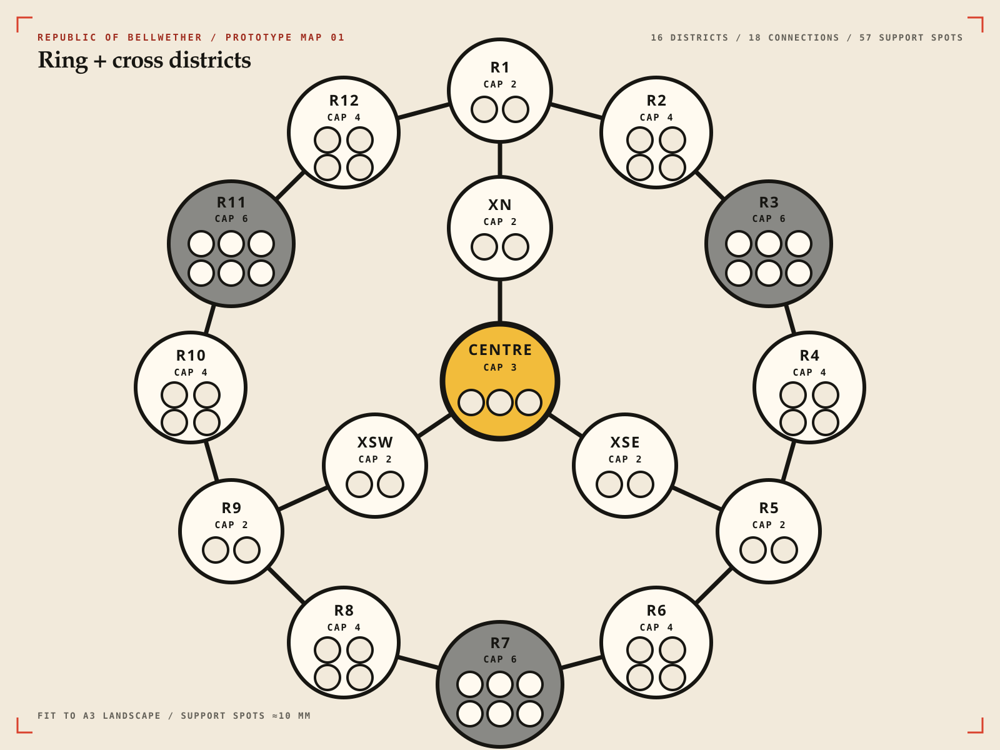

This diagram established the sixteen-district topology and 6/4/3/2 capacity pattern before the nodes were expanded into named territories with shared borders.
Archived component

Replacement
The current map turns each node into a named geographic district. Shared borders now show adjacency, while Crownwater separates districts that are not neighbors.